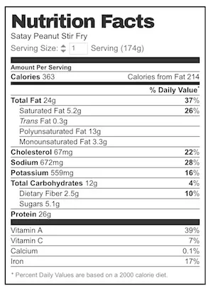

Quick Satay Peanut Stir Fry (any protein)
VIDEO below. A gem of a recipe given to me by a reader, this is a brilliant QUICK Satay Stir Fry that tastes like Chinese style satay that you get from Chinese restaurants here in Australia. Make this with your choice of protein - great with beef (pictured), chicken, pork, shrimp or tofu. Use shredded shaped vegetables - ideal for this sauce which is not the saucy type.
Servings: 3 - 4 people
Calories: 363cal
Ingredients
Sauce:
- 1 1/2 tbsp fish sauce (Note 1)
- 1 1/2 tsp sugar
- 2 tsp cornflour / cornstarch
- 1 garlic clove , minced
- 1 tsp grated ginger
- 1 tsp curry powder (any - I use hot!)
- 1 1/2 tbsp crunchy peanut butter (smooth also ok)
- 2 tbsp water
Stir Fry:
- 300 - 350 g / 10 - 12 oz beef , chicken or pork thinly sliced (or peeled prawns/shrimp) (Note 2)
- 2 tbsp oil
- 1 garlic , finely chopped (Note 3)
- 1 large onion , sliced
- 1 large carrot , julienned (Note 4)
- 1 big handful bean sprouts (~1 1/2 cups packed)
- 1/2 cup finely sliced shallots / green onions (plus more for garnish)
- 1/4 cup crushed peanuts , plus more for garnish (optional)
Instructions
- Mix Sauce ingredients EXCEPT WATER together in a small bowl. Then mix in water (easier to combine).
- Place beef in a bowl, add 1 tbsp Sauce. Mix, set aside 10 minutes.
- Heat oil in a wok or large heavy based skillet over high heat. Add garlic and stir until golden (~10 sec) then add onion. Cook for 1 minute.
- Add beef. Cook for 1 1/2 minutes or until it mostly turns brown (some red spots ok). If using pork, chicken or prawns, cook until almost cooked through.
- Add carrots, bean sprouts and Sauce. Cook until veggies are wilted.
- Add peanuts and shallots, stir.
- Serve immediately with rice or noodles, garnished with extra shallots and peanuts if desired. (For a low carb, low cal option, try Cauliflower Rice!)
Notes
1. Fish Sauce has more layers of flavour than soy sauce. But if you are a fish sauce hater or are concerned about this tasting fishy (which I do not think it does), then feel free to sub some or all of it with light or all purpose soy sauce (not dark or sweet soy sauce).
2. Protein - This recipe works very well with any protein. It would even work with fish but it would need to be a sturdy one cut into cubes that can hold up to stir frying, or cook it separately then spoon over Satay Vegetables (that's a good way to make this for fish).
TIP: Tenderise chicken or beef the Chinese restaurant way. See How to Velvet Chicken and How to Velvet Beef.
3. STIR FRY TIP: Finely chopped garlic works better for stir fries than using a mincer or from a jar because it's not wet so it doesn't stick to the wok, and also because the pieces are slightly larger it doesn't burn as quickly. If using a jar or mincer (yes I do!), then add the garlic with the onion.
4. I used pre shredded carrots. I always have a bag of Just Veg pre-shredded carrots in my crisper because it lasts for weeks and weeks, it is excellent quality because it's made by the wives of QLD Carrot Growers and they are packaged within a few hours of being pulled from the ground. Available only at Woolworths in Australia. Super handy for extra hit of veggies to throw into sandwiches, omelettes, soups, salads, stir fries etc.
5. STIR FRIED NOODLES: To make stir fried noodles, double Sauce and add about 350g/12 oz of fresh noodles or 200g/7oz of dried noodles (rehydrate/cook per packet). Add it with the Sauce, toss to coat then serve.

Nutrition
Calories: 363cal